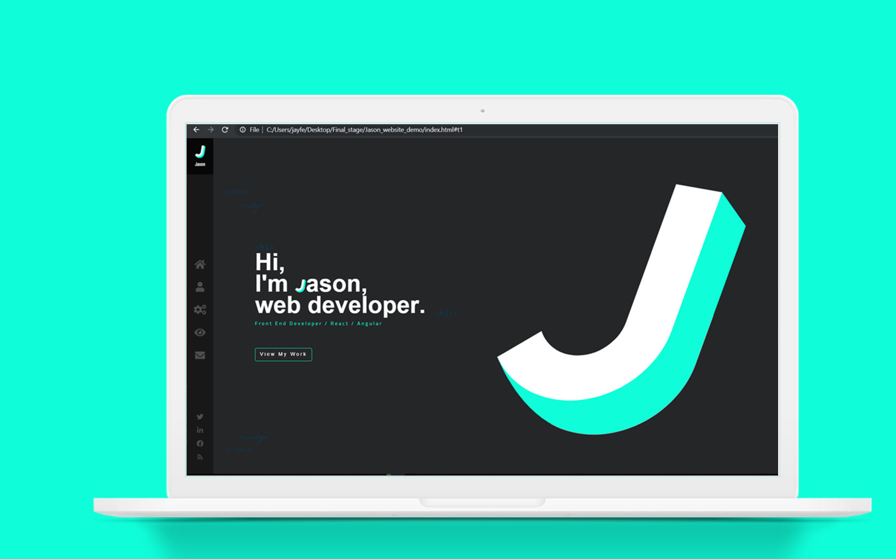

I asume that almost every company that i will be applying for a job as a web designer/developer in the future will require me to present a portfolio website that showcase my awesome works. So i decided to create one of it for now to get me ready.

I like to keep it trendy, minimal and simple.
This website is still under development.
